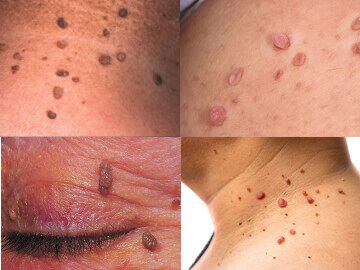
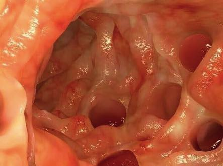
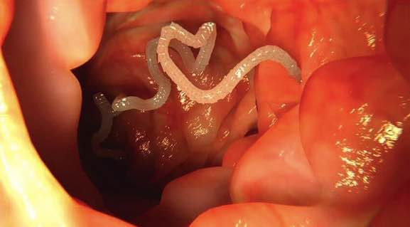
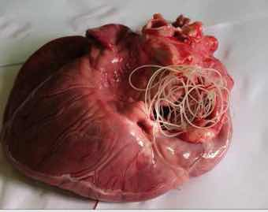

PAPILOMA DISEBABKAN OLEH PARASIT DI DALAM TUBUH ANDA!
JIKA ANDA MEMILIKI PAPILOMA DI LEHER, KETIAK, DAN TEMPAT-TEMPAT LAINNYA DI TUBUH ANDA - ARTINYA PARASIT MEMAKAN TUBUH ANDA DARI DALAM!
PAPILOMA DISEBABKAN OLEH PARASIT DI DALAM TUBUH ANDA!
JIKA ANDA MEMILIKI PAPILOMA DI LEHER, KETIAK, DAN TEMPAT-TEMPAT LAINNYA DI TUBUH ANDA - ARTINYA PARASIT MEMAKAN TUBUH ANDA DARI DALAM!
Jika seseorang memiliki papiloma atau kutil pada kulitnya, artinya bahwa koloni parasit mematikan telah menghuni organ-organ internalnya dan secara perlahan memakan daging mereka.
Berdasarkan statistik, lebih dari 1 miliar orang terinfeksi parasit. Cara paling akurat untuk mendiagnosis infeksi ini adalah adanya ruam papiloma.
Ibu Lidya Kesuma
Seorang ahli kesehatan terkenal di Institut Parasitologi Medis dan Kedokteran Tropis. Telah menulis lebih dari 20 karya ilmiah tentang Parasitologi Molekuler. Pelaksana penelitian mengenai diagnostik molekuler penyakit leishmaniasis.
Pengalaman kerja: lebih dari 15 tahun
Dari editor: Lembaga Penelitian Ilmiah Parasitologi Medis dan Kedokteran Tropis telah menemukan alasan sebenarnya munculnya papiloma pada tubuh manusia: infeksi parasit. Studi terbaru menunjukkan bahwa produk utama parasit adalah racun dan racun ini membentuk lingkungan yang ideal di perut manusia bagi perkembangan bakteri berlendir. Karena alasan inilah, pada tubuh orang-orang yang terinfeksi parasit dapat ditemukan kutil atau papiloma.
Kita akan membahas masalah medis ini dengan Ibu Lidya Kesuma, seorang ahli kesehatan terkenal di Institut Parasitologi Medis dan Kedokteran Tropis.
Bu Lidya, selamat siang! Saya akan mulai dengan pertanyaan utama: apakah benar bahwa sebagian besar populasi Indonesia terinfeksi parasit?
Ibu Lidya: Iya betul. Sayangnya, kita menempati salah satu posisi teratas dalam hal infeksi parasit. Ini dikarenakan kondisi lingkungan yang sangat buruk, tidak adanya tindakan dari pihak berwenang, dan ketidakpedulian masyarakat terhadap masalah ini.
Setiap tahunnya, jutaan orang meninggal dunia dikarenakan penyakit yang dipicu parasit. Pada saat yang sama, jika Anda melihat pada sertifikat kematiannya, Anda tidak akan melihat catatan 'kematian karena parasit' di sana. Kecuali pada kasus-kasus tertentu yang langka, biasanya pada situasi di mana tidak mungkin mengabaikan infeksi parasit tersebut, misalnya, jantung tersumbat oleh parasit. Tidak menguntungkan bagi pihak otoritas medis lokal untuk mengakui tingginya tingkat serangan parasit dan fakta bahwa kira-kira 89% dari semua kematian disebabkan oleh parasit. Selain itu, penyakit yang dipicu oleh parasit memaksa pasien untuk pergi ke klinik dan membeli obat-obatan yang mahal. Ini adalah pangsa pasar yang sangat besar. Saya harap Anda bisa membaca yang tersirat dari pernyataan saya dan mengerti apa yang saya maksud.
Bu, apakah kutil benar-benar merupakan tanda infeksi parasit?
Ibu Lidya: Betul. Sejumlah kelompok penelitian sepakat bahwa produk buangan parasit menyebabkan munculnya papiloma atau kutil pada kulit manusia. Selain itu, jika Anda melihat kutil pada kulit Anda, ini berarti parasit sudah menetap di dalam tubuh Anda dan bertelur secara aktif. Ini berarti bahwa setiap orang yang memiliki kutil pada kulitnya berada dalam bahaya besar.

Dan sekali lagi, kira-kira 89% dari semua kematian, termasuk kematian yang tercatat sebagai kematian karena sebab 'alami' memiliki satu penyebab yang sama - parasit, yang secara perlahan memakan tubuh kita dari dalam.
Jadi, biasanya parasit adalah cacing atau helminth yang dapat menyebabkan munculnya kutil di kulit. Bagaimana caranya parasit ini bisa menyebabkan kematian?
Ibu Lidya: Pada kenyataannya, anggapan bahwa parasit yang menyerang kita hanya berupa cacing saja merupakan sebuah kesalahpahaman besar. Terdapat bermacam-macam jenis parasit yang hidup di dalam berbagai organ tubuh, yang mengakibatkan konsekuensi yang beragam pula. Selain itu, cacing, atau terutama helminth, sangat berbahaya. Cacing merusak usus, mengakibatkan pembusukan usus, dan kemudian kematian. Ngomong-ngomong, bahkan cacing pun sulit untuk ditemukan dan dibasmi.
Selain cacing, ada ribuan parasit yang dapat hidup di hati, otak, paru-paru, darah, dan perut Anda. Dan hampir semuanya mematikan. Beberapa diantaranya langsung bertindak agresif dan merusak tubuh. Parasit lain hidup mendiami tubuh tanpa kita sadari sampai jumlahnya menjadi sangat besar sehingga tubuh tidak dapat lagi menahan kerusakan karenanya, sehingga orang tersebut meninggal. Parasit menyebabkan berbagai komplikasi mematikan: serangan jantung, tumor kanker, sirosis hati, nefritis, pembusukan ginjal, dll.
Pada saat yang sama, saya dengan yakin dapat mengatakan bahwa hampir semua orang terinfeksi parasit. Masalahnya, kebanyakan dari kasus infeksi parasit ini sangat sulit dideteksi. Dan ketika akibat dari infeksi parasit terlihat, dokter mencoba untuk menghilangkan hanya gejalanya saja. Bahkan selama otopsi tubuh, tes khusus diperlukan untuk mendeteksi parasit. Setidaknya untuk sebagian besar dari parasit.
Satu-satunya gejala universal yang secara akurat dapat memastikan infeksi parasit dalam tubuh manusia adalah papiloma atau kutil.
Dapatkah Ibu memberikan beberapa contoh spesifik kasus serangan parasit?
Ibu Lidya: Saya dapat menceritakan kepada Anda ratusan kasus. Tapi, mungkin, saya akan fokus pada contoh-contoh yang dapat dengan jelas menunjukkan bahaya parasit.
1. Situasi yang berakhir bahagia. Pasien mengeluhkan nyeri perut sesekali. Pemeriksaan menunjukkan bahwa seluruh ususnya tersumbat oleh cacing. Semua cacing itu menggali labirin di sana, kemudian proses pembusukan dimulai, dan pasien tersebut hampir mengalami sepsis. Selama operasi, sebagian usus diangkat, cacing dibersihkan, dan jaringan yang membusuk dibuang. Dan setelah seminggu dalam perawatan intensif, pasien tersebut merasa lebih sehat.

2. Rahim atau uterus dengan koloni parasit di dalamnya. Sayangnya, sudah tak mungkin lagi membuang koloni parasit tersebut, karena parasit dan larvanya sudah mengisi rahim sepenuhnya dan memperbesar volumenya, berkali-kali lipat. Karena itu, rahimnya harus diangkat. Sang pasien berhasil diselamatkan. Karena keracunan tubuhnya terlalu parah, dia menjalani terapi khusus setelah pengangkatan rahim, namun dia akhirnya meninggal dalam waktu 3 tahun setelahnya.

3. Kista Ekinokokus pada jantung. Penyakit ini terlambat dideteksi. Dokter yang merawatnya awalnya menganggap bahwa pasien tersebut hanya mengalami penyakit jantung koroner dan angina, tetapi kenyataannya jauh lebih kejam. Operasi yang dilakukan tidak berguna, perawatan konservatif juga tidak membantu. Transplantasi jantung juga tidak berhasil - tidak ada donor. Akibatnya, pasien meninggal tanpa bisa sadar kembali.

Bagaimana seseorang bisa tahu bahwa dia terinfeksi parasit?
Ibu Lidya: Sayangnya, bisa dibilang bahwa tidak ada metode pasti untuk mendiagnosis adanya parasit di dalam tubuh manusia. Sebagian, ini dikarenakan ada begitu banyaknya jenis parasit (lebih dari 2.000 spesies yang telah diketahui), dan sebagian lagi karena tingginya tingkat kesulitan untuk mendeteksi parasit. Pemeriksaan parasit lengkap hanya dapat dilakukan di beberapa tempat saja di Indonesia, dan menghabiskan biaya yang sangat mahal.
Gejala-gejala awal yang menunjukkan adanya parasit dalam tubuh:
✅ Papiloma atau kutil
✅ Bau mulut
✅ Alergi (ruam, mata berair, pilek)
✅ Ruam dan kemerahan pada kulit
✅ Sering masuk angin, sakit tenggorokan, hidung tersumbat
✅ Kelelahan kronis (Anda cepat lelah, apa pun yang Anda lakukan)
✅ Sering sakit kepala
✅ Sembelit atau diare
✅ Nyeri pada sendi dan otot
✅ Gugup, susah tidur, dan gangguan nafsu makan
✅ Lingkaran hitam, kantung di bawah mata
Jika setidaknya ada salah satu dari gejala tersebut, maka kemungkinan 99% ada parasit di tubuh Anda. Dan Anda harus membasmi parasit itu sesegera mungkin!
Bagaimana orang-orang bisa membasmi parasit dan melindungi diri dari parasit?
Kondisi saat ini terkait obat-obatan untuk mengobati serangan parasit cukup pelik. Tentu saja, ada beberapa obat yang sangat khusus yang dapat membersihkan tubuh dari cacing. Ada juga beberapa obat yang kurang lebih efektif untuk beberapa jenis cacing hati dan parasit hati. Masalah utamanya adalah bahwa obat-obatan ini hanya membasmi satu jenis parasit tertentu saja. Sementara setiap orang setidaknya terinfeksi 7-8 spesies parasit. Jika kita mengambil angka rata-rata, kita mendapatkan kira-kira 11-14 jenis parasit untuk setiap orang yang terinfeksi.
Hingga saat ini, hanya ada satu solusi yang memungkinkan kita untuk membasmi parasit. Obat antiparasit yang bernama Intoxic. Uji klinis telah menunjukkan hasil yang luar biasa. Sampai saat ini ekspor obat ini dilarang hingga obat ini dapat tersedia sepenuhnya untuk seluruh populasi masyarakat Indonesia.
Apa yang membuat Intoxic begitu istimewa? Apa perbedaan antara obat ini dan produk antiparasit lainnya?
Ibu Lidya: Seperti yang sudah saya katakan sebelumnya, sampai saat ini, produk ini adalah satu-satunya solusi antiparasit yang ampuh di seluruh dunia. Produk ini membantu membasmi parasit sepenuhnya. Itu sebabnya produk ini sangat dicari oleh jaringan apotek dan perusahaan farmasi internasional. Dibandingkan dengan obat antiparasit lainnya, obat ini bekerja langsung melawan seluruh jenis parasit yang dapat menginfeksi tubuh manusia. Mengingat masalah dengan diagnosis parasit, produk ini memungkinkan Anda untuk membersihkan seluruh tubuh secara efektif. Sebelumnya telah saya sebutkan bahwa hampir tidak mungkin mendeteksi parasit jenis apa yang telah menginfeksi tubuh. Dan Intoxic membasmi serta membuang keluar semua parasit yang hidup di mana pun di dalam tubuh - dari otak dan jantung hingga hati dan usus. Tidak ada obat lain yang tersedia saat ini yang mampu melakukan ini.
Selain itu, ini bukan obat kimia, tapi produk yang sepenuhnya alami, sehingga menghilangkan reaksi alergi, ketidakseimbangan flora usus, dan masalah lain yang dapat timbul ketika mengobati penyakit dengan pil konvensional yang seringkali memaksa tubuh memproses banyak senyawa kimia.
PENTING! Pabrikan produk ini telah meluncurkan program promosi khusus, berkat program promosi ini obat ini sekarang tersedia dengan diskon 50%!
Ini adalah penawaran dengan waktu terbatas. Produk Intoxic yang asli dapat dipesan di situs web resmi DENGAN DISKON 50%!
1. Efektivitas Intoxic dihitung menggunakan teknik standar (rasio jumlah pasien yang pulih terhadap jumlah total pasien dalam kelompok 100 orang yang diobati menggunakan Intoxic):
✅ Hilangnya cacing dan telur: 99%
✅ Normalisasi fungsi dan kondisi pankreas: 80%
✅ Hilangnya dermatitis karena alergi: 90%
✅ Hilangnya gastritis, bisul, diare: 90%
✅ Hilangnya anemia: 99%
✅ Hilangnya papiloma dan kutil: 99%.
2. Tidak ada efek samping negatif, termasuk reaksi alergi, yang ditemukan.
3. Intoxic diakui sebagai obat terampuh dalam memerangi parasit di dalam tubuh manusia.
Selain di Indonesia, obat ini telah disertifikasi di Eropa di Universitas Parasitologi di Paris. Uji klinis telah sepenuhnya mengkonfirmasi data yang didapat di Indonesia. Pihak Perancis bahkan telah melaporkan persentase pemulihan yang lebih tinggi. Saat ini, serangkaian penelitian klinis di Cina, Jepang, dan Vietnam telah hampir tuntas. Negara-negara Asia memiliki minat yang sangat besar terhadap obat ini. Semua pengujian tanpa kecuali menunjukkan bahwa produk ini memiliki tingkat efisiensi yang sangat tinggi.
Saya pikir para pembaca kami ingin mengetahui di manakah tempat untuk membeli Intoxic dengan harga diskon?
Ibu Lidya: Ini adalah penawaran dengan waktu terbatas. Dan sekarang penawaran ini hanya tersedia untuk wilayah tertentu saja. Seperti yang saya sebutkan sebelumnya, Intoxic dapat dibeli dengan diskon 50%.
Yang perlu Anda lakukan untuk mendapatkan Intoxic adalah mengirimkan permintaan di situs web ini, dengan menyebutkan nama dan nomor telepon Anda sehingga operator dapat menghubungi Anda. Jika Anda masih melihat ada pilihan untuk mengirimkan permintaan, ini berarti persediaan obatnya masih ada. Saya pribadi menjamin bahwa semua orang yang mengirimkan permintaan di situs web ini akan menerima pesanan mereka.
Bu Lidya, apakah ada yang ingin Bu sampaikan kepada para pembaca kami sebelum mengakhiri wawancara ini?
Ibu Lidya: Satu-satunya hal yang ingin saya katakan adalah, jaga kesehatan Anda. Anda mungkin tidak akan menduganya, tetapi kemungkinan parasit hidup di dalam tubuh Anda adalah 97-98%. Parasit dapat berada di mana saja - dalam darah, usus, paru-paru, jantung, otak. Parasit dapat memakan tubuh Anda dari dalam dan di saat yang bersamaan juga meracuni tubuh Anda. Akibatnya, muncul banyak masalah kesehatan yang dapat mengurangi umur Anda hingga 15-25 tahun. Selain itu juga ada ancaman kematian mendadak, yang biasanya terkait dengan efek parasit pada tubuh manusia. Jangan menunggu sampai terlambat. Bersihkan tubuh Anda sekarang juga.
Salam hangat, Bu Lidya
Paketnya sampai dengan sangat cepat.
Salam hangat, bu Lidya
Salam hangat, bu Lidya
Penawarannya menarik banget, cepetan!
Operatornya nelpon aku untuk mengkonfirmasi pesanan hampir saat itu juga. Hidup dengan cacing dalam tubuhmu itu gak enak banget.
Salam hangat, bu Lidya
Salam hangat, bu Lidya
Dan, tolong, hati-hati dengan barang palsu.
Salam hangat, bu Lidya